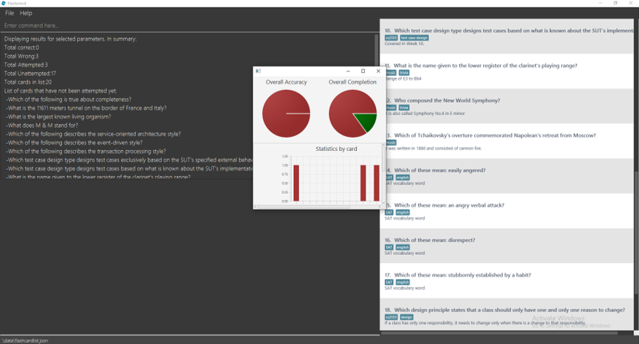

By: CS2103 T14-3 Since: Nov 2019 Licence: MIT
- 1. Introduction
- 2. Quick Start
- 3. Features
- 3.1. Adding new flashcards
- 3.2. Listing all flashcards
- 3.3. Listing all flashcard by tags
- 3.4. Listing all tags
- 3.5. Editing a flashcard
- 3.6. Quiz mode
- 3.7. Quiz Tag mode
- 3.8. Flip a flashcard
- 3.9. End quiz mode
- 3.10. Display current progress
- 3.11. Delete a flashcard
- 3.12. Finding a flashcard
- 3.13. Exiting the program
- 3.14. Saving the data
1. Introduction
FlashMind helps students to use their time breaks to memorize things like vocabulary and some general knowledges, especially those who prefer command line interface (CLI) over clicks. Everything is organized into flashcards, each contain one question. Users can also tag the flashcards to group them and see their progress over time through statistics.
2. Quick Start
-
Ensure you have Java
11or above installed in your Computer. -
Download the latest
FlashMind.jarhere. -
Copy the file to the folder you want to use as the home folder for your flashback.
-
Double-click the file to start the app. The GUI should appear in a few seconds.
 -
Type the command in the command box and press Enter to execute it.
e.g. typinghelpand pressing Enter will open the help window. -
Some example commands you can try:
-
list: lists all flashcards -
add q/How long is Mount Blanc Tunnel? a/11611m d/An amazing tunnel on the boarder of France and Italy: Add a flashcard about Mount Blanc Tunnel -
delete3: deletes the flashcard with index 3 on the listed flashcards. -
exit: exits the app
-
-
Refer to Section 3, “Features” for details of each command.
3. Features
Command Format
-
Words in
UPPER_CASEare the parameters to be supplied by the user e.g. inadd q/QUESTION,QUESTIONis a parameter which can be used asadd q/How long is Mount Blanc Tunnel?. -
All commands are case sensitive and should be in its lowercase.
-
Items in square brackets are optional e.g
q/QUESTION [t/TAG]can be used asq/How long is Mount Blanc Tunnel? t/geographyor asq/How long is Mount Blanc Tunnel?. -
Items with
…after them can be used multiple times including zero times e.g.[t/TAG]…can be used ast/geography,t/geography t/civil engineeringetc. -
Parameters can be in any order e.g. if the command specifies
q/QUESTION a/ANSWER,a/ANSWER q/QUESTIONis also acceptable. -
To view all the available commands that the user can use. Use help command
Format:help
3.1. Adding new flashcards
Add a new flashcard and specify its question, definition, tags, choices and answer.
Format: add q/QUESTION d/DEFINITION [t/TAG]… [c/CHOICE]… a/ANSWER
Examples:
-
add q/What is the tallest mountain in the world? d/This mountain is on the boarder of China and Nepal. a/Mount Everest: Creates a new short answer flashcard with the given question, definition and answer. -
add q/What is the tallest mountain in thw world? d/This mountain is on the boarder of China and Nepal. c/Mountain Everest c/Mount Blanc c/Shkhara c/Bukit Timah a/Mountain Everest: Creates a new MCQ flashcard with the given question, definition choices and answer. -
add q/What is the tallest mountain in thw world? d/This mountain is on the boarder of China and Nepal. c/Mountain Everest c/Mount Blanc c/Shkhara c/Bukit Timah a/Alps: Since the answer you input does not match with any of the choices, the system will generate an error message.
3.2. Listing all flashcards
Shows a list of all existing flashcards in the system.
Format: list
3.3. Listing all flashcard by tags
Shows a list of all flashcard under given tag names. If there are no flashcards under the input tag name, you should see
an empty flashcard list being displayed. Note you can list multiple tags at the same time.
Format: listbytag t/TAG…
Examples:
-
listbytag t/mathematics: List all flashcards under the tag mathematics. -
listbytag t/mathematics t/geography: List all flashcards under the tag mathematics OR the tag geography.
3.4. Listing all tags
Show the list of tags exists in the system.
Format: listtag
3.5. Editing a flashcard
Edits an existing flashcard in the address book.
Format: edit INDEX [q/QUESTION] [a/ANSWER] [d/DEFINITION] [t/TAG]… [c/CHOICE]…
Examples:
-
edit 5 q/What is the tallest mountain?
Edits the question of the card with index 5 to "What is the tallest mountain?". -
edit 5 a/Mount EverestEdits the answer of the card with number 5 to "Mount Everest".
3.6. Quiz mode
Starts a quiz using a particular flashcard index.
Format:
Format: quiz INDEX
Examples:
-
quiz 8: start a quiz on the flashcard number 8.
3.7. Quiz Tag mode
Starts a continuous quiz on a tag or a series of tags
Format:
Format: quiztag t/TAG…
Examples:
-
quiztag t/mathematics t/geography: start a quiz on all the flashcards with tagmathematicsandgeography.
3.8. Flip a flashcard
| Only usable in quiz mode (i.e after a quiz or quiztag command) |
Format: flip ANSWER
Examples:
After quiztag t/geography, the flashcard below is shown:
The user can type flip 2 to answer the flashcard correctly.
3.10. Display current progress
Shows the current progress of a set of flashcards.
Format: stats [t/TAG]…
Examples:
-
stats t/biology: Displays the progress of a the flashcards tagged with Biology.
3.11. Delete a flashcard
Deletes the specified flashcard from the list of all flashcards.
Format: delete INDEX
Example:
-
delete 5: Removes the flashcard with index 5 in the list.
3.12. Finding a flashcard
Find a flashcard based on the keyword in its question, definition or answer.
Format: find KEYWORD
Example:
-
find Blanc: Find flashcards whose question or answer contains string "Blanc".
3.13. Exiting the program
Exits the program.
Format: exit
3.14. Saving the data
Flashcards are saved in the hard disk automatically after any command that changes the data.
There is no need to save manually.